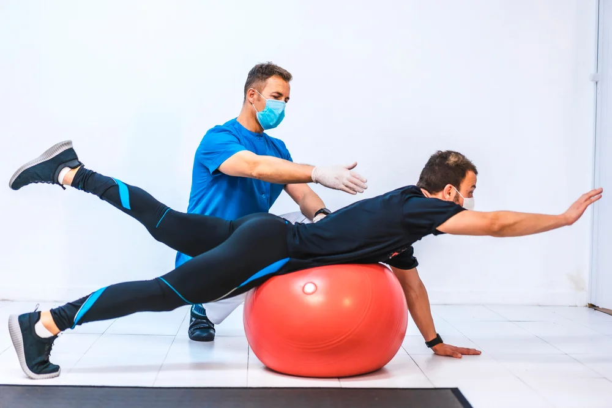
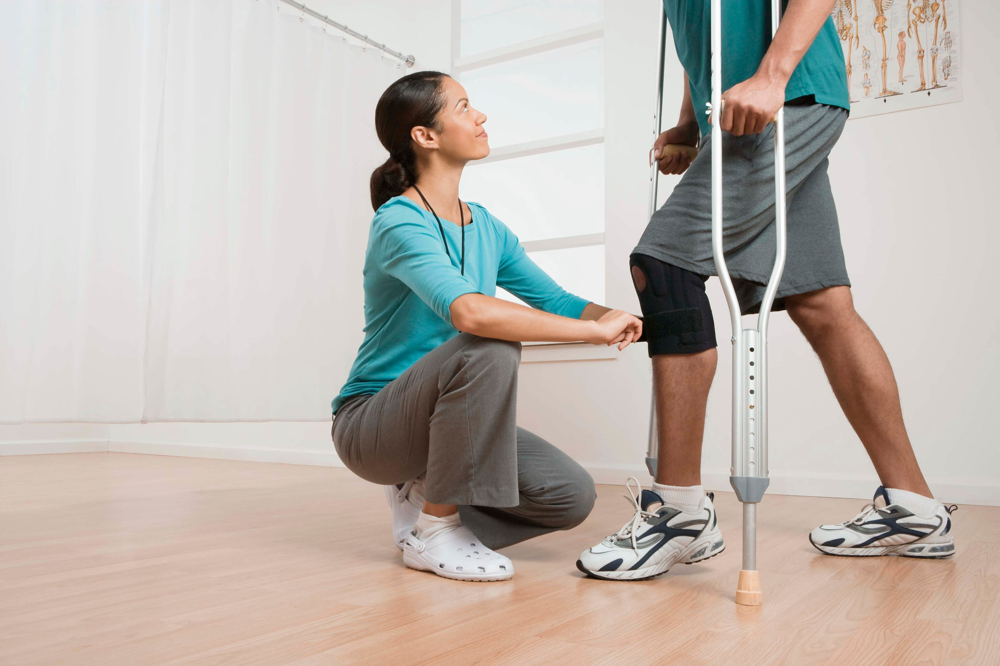
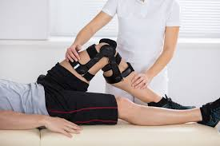
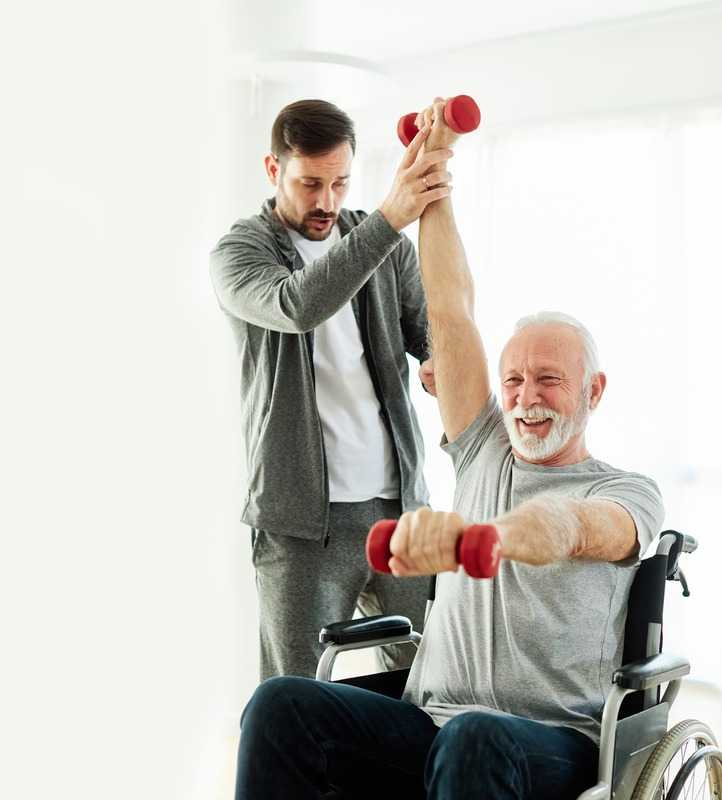

Services
At PhysioFlex Clinic, we offer evidence-based physiotherapy and rehabilitation services focused on pain relief, mobility restoration, and long-term recovery. Every treatment is personalized to your condition, lifestyle, and goals.

Orthopedic Physiotherapy
Specialized physiotherapy care for bone, joint, and muscle-related conditions. Our orthopedic treatments focus on reducing pain, restoring movement, and improving strength caused by injuries, posture issues, or age-related problems.
Session Duration
Each session lasts 40–60 minutes, depending on the condition and treatment plan.
Recommended Sessions
Typically 8–20 sessions, based on injury severity, chronicity, and functional goals.
Treatment Techniques
- ✔ Manual therapy & joint mobilization
- ✔ Muscle strengthening & flexibility exercises
- ✔ Postural correction & ergonomic advice
- ✔ Pain & inflammation management
Conditions Treated
Back pain, neck pain, frozen shoulder, knee pain, arthritis, sports injuries, postural disorders, and age-related joint degeneration.

Neurological Rehabilitation
Dedicated physiotherapy programs for neurological conditions affecting movement, balance, coordination, and muscle control. Our goal is to improve functional independence and quality of life through structured rehabilitation.
Session Duration
Each session lasts 45–60 minutes, tailored to the patient’s neurological condition and tolerance level.
Recommended Sessions
Typically 15–40 sessions, depending on diagnosis, severity, recovery stage, and rehabilitation goals.
Rehabilitation Techniques
- ✔ Neuro-motor re-education
- ✔ Balance & coordination training
- ✔ Gait training & mobility exercises
- ✔ Muscle strengthening & spasticity control
Conditions Treated
Stroke, Parkinson’s disease, multiple sclerosis, spinal cord injury, nerve injuries, cerebral palsy, and post-brain injury rehabilitation.

Sports Injury Rehabilitation
Comprehensive rehabilitation for sports-related injuries focusing on safe recovery, performance enhancement, and injury prevention. Suitable for athletes and physically active individuals of all levels.
Session Duration
Each session lasts 45–75 minutes, depending on injury type, sport demands, and rehabilitation phase.
Recommended Sessions
Typically 8–25 sessions, depending on severity, sport level, and recovery goals.
Rehabilitation Techniques
- ✔ Strength & conditioning programs
- ✔ Mobility & flexibility training
- ✔ Proprioception & balance exercises
- ✔ Sport-specific movement correction
- ✔ Injury prevention strategies
Injuries Treated
ACL & meniscus injuries, muscle strains, ligament tears, tennis elbow, runner’s knee, ankle sprains, shoulder injuries, and overuse injuries.

Post-Surgical Rehabilitation
Personalized physiotherapy programs designed to accelerate healing after surgery. We help patients regain strength, mobility, balance, and confidence following orthopedic and musculoskeletal procedures.
Session Duration
Each session lasts 45–60 minutes, carefully structured to support safe and progressive recovery.
Recommended Sessions
Usually 10–30 sessions, depending on surgery type, healing stage, age, and functional goals.
Rehabilitation Techniques
- Range of motion & mobility exercises
- Progressive muscle strengthening
- Gait training & balance re-education
- Pain & swelling control techniques
- Scar tissue & stiffness management
Surgeries Commonly Treated
Knee & hip replacement, ACL reconstruction, fracture fixation, spinal surgery, shoulder repair, and arthroscopy recovery.

Pain Management Therapy
Non-invasive physiotherapy solutions for managing acute and chronic pain conditions. Our pain management programs focus on identifying the root cause and providing long-term relief without dependency on medication.
Session Duration
Each session lasts 40–60 minutes, depending on pain severity and treatment techniques used.
Recommended Sessions
Typically 6–20 sessions, based on whether the condition is acute, chronic, or posture-related.
Treatment Techniques
- ✔ Manual therapy & soft tissue release
- ✔ Electrotherapy (IFT, TENS, Ultrasound)
- ✔ Postural correction & ergonomic training
- ✔ Stretching & strengthening exercises
Conditions Treated
Back pain, neck pain, sciatica, slip disc, shoulder pain, arthritis, muscle spasms, and work-related postural pain.

Home Visit Physiotherapy
Professional physiotherapy services delivered at home for patients who are unable to visit the clinic or prefer treatment in a familiar environment. Care is personalized, safe, and convenient.
Session Duration
Each session lasts 45–60 minutes, depending on the patient’s condition.
Recommended Sessions
Typically 5–15 sessions, adjusted based on recovery progress and goals.
Treatments Included
- ✔ Pain relief & manual therapy
- ✔ Post-surgery rehabilitation
- ✔ Muscle strengthening exercises
- ✔ Balance & gait training
- ✔ Stroke & neurological rehab
- ✔ Home exercise guidance
Who Is It For?
Ideal for elderly patients, post-operative recovery, neurological conditions, and individuals with limited mobility.